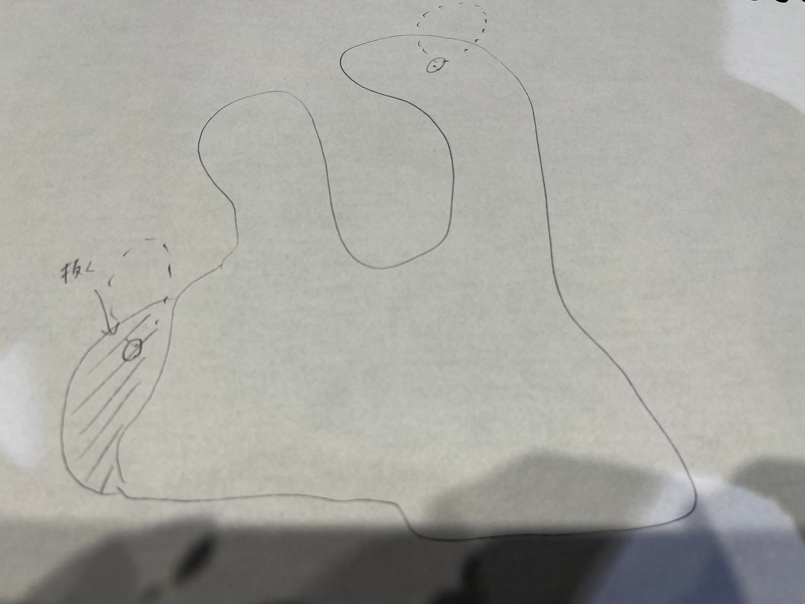
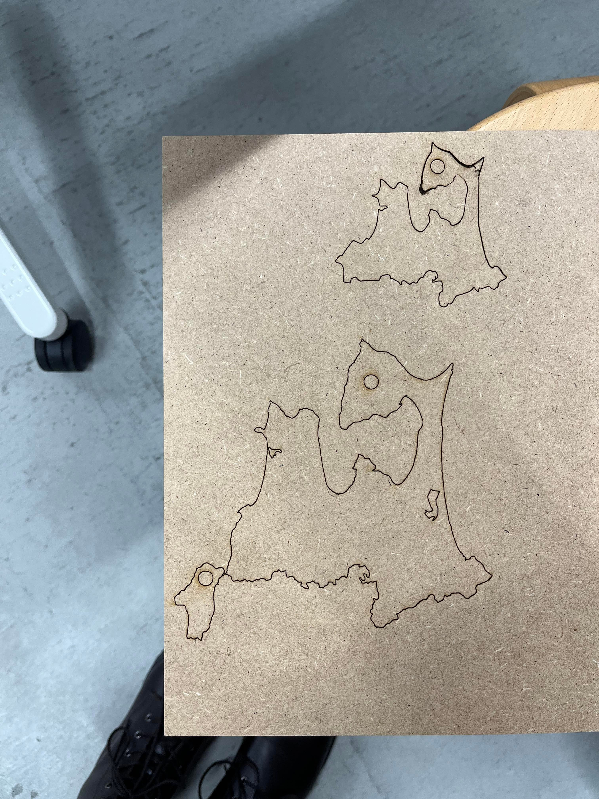
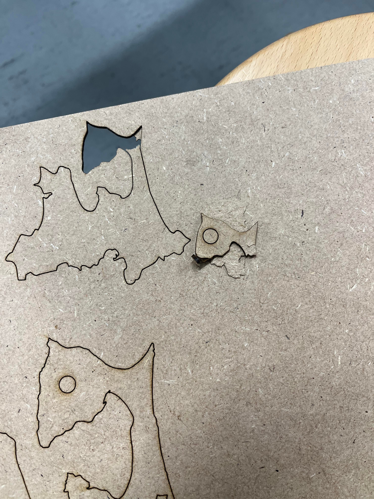
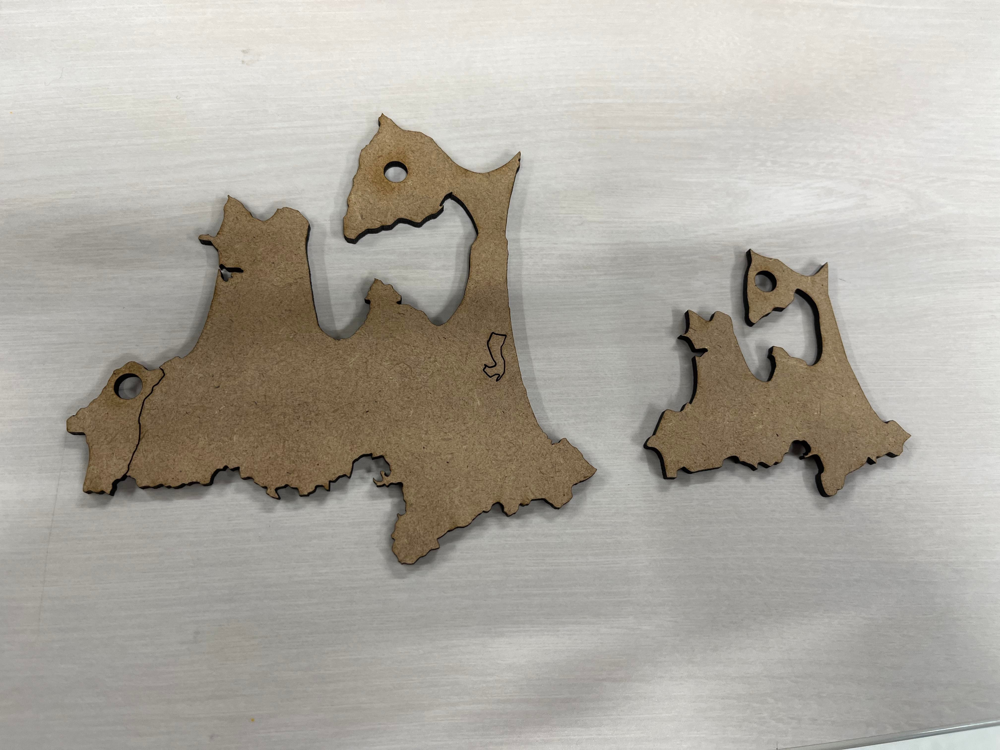
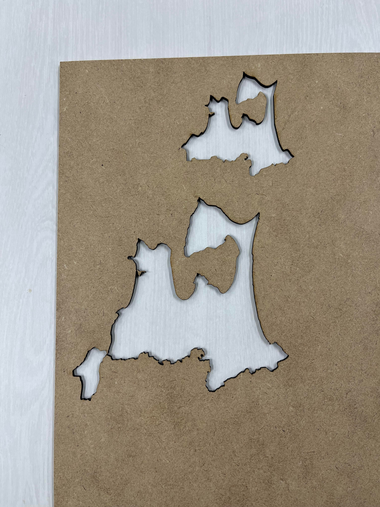
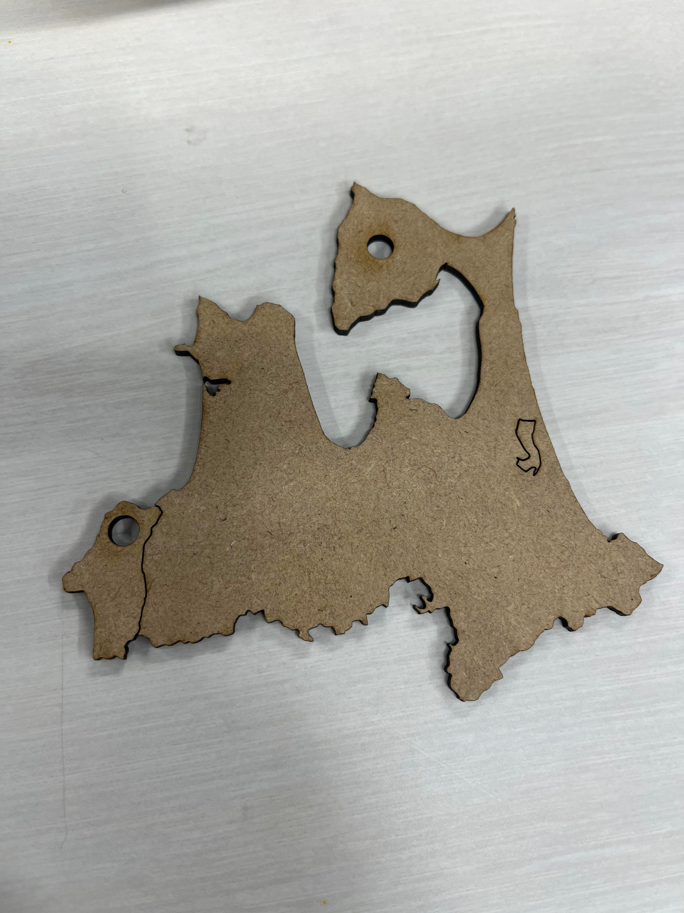
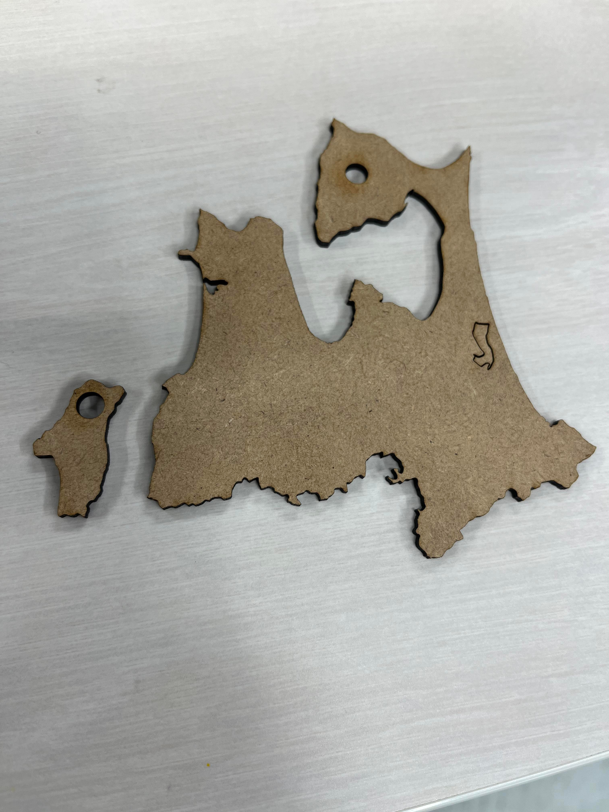
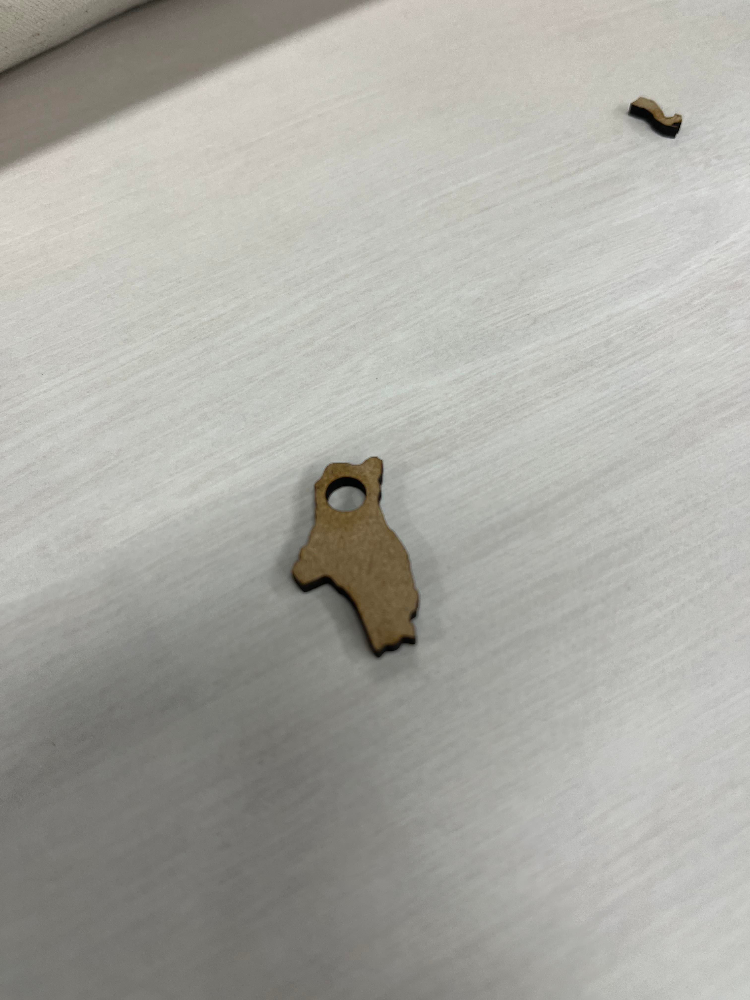
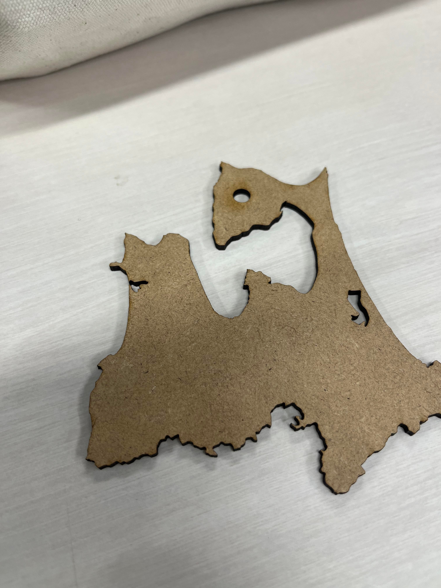
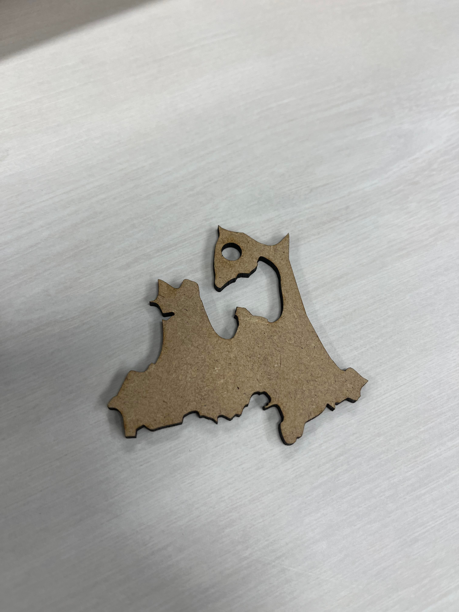

私の地元〜青森県深浦町〜
作る動機
今年8月私の地元青森県深浦町は記録的な大雨により甚大な被害が出た
その際、深浦町は1本しかない国道が南北共に寸断され、一時孤立状態となった
全国ニュースで何度も「青森県深浦町」と連呼された
しかし！！！
ほとんどの人は、「深浦町」なんて知らないのだ！
青森県は知っていても、深浦町を知っている人なんてほぼいない
逆に知っていたら、是非とも私に声をかけて欲しい笑
そんな弱小の町深浦をアピールすべく、
青森県ストラップを作ろうと考えた
そう、誰のためでもない
深浦が大好きな自分のために！！
深浦町は、青森県の一番西側にある比較的面積の大きな町だ
その深浦町を青森県から無くすとこんなにもバランスが悪いんだ！
ということを知ってもらいたい
今回、純正の青森県ストラップと
青森県から深浦町を切り取ってしまった、なんともバランスの悪い青森県を制作した
私のイメージしている青森県深浦町なしver

今回は、正確に青森県、深浦町の形を表現したかったので、
白地図のフリーサイトから青森県と深浦町の白地図をダウンロードし、
それをDXFに変換し、fusion360にデータとして取り込んだ
その際、授業で紹介されていたjeffyさんのページを参考にした
（ありがとうございます！）
jeffy ピンセット
しかし、ここで問題が発生！！
取り込んだDXFデータがめちゃくちゃ細かい線で構成された青森県だった
fusion360に取り込む分には1本の線として認識されていて
試しに押し出しなどをやってみたが出来た
だが、そのfusion360でアレンジしたデータをDXFに戻すとやはり細切れの線になってしまう
ファブラボの方に聞いたところ、「繋がってはいると思うから出力してみて」
とのことだったので、そのまま出力してみた
結果、2度同じ位置で出力をかけても、貫通してくれず、
このような結果となってしまった


あっ…！！あぁ〜〜〜〜〜！
折れました。下北半島折れました。私の心も折れました。
ここまで制作して、諦めたくはない！
そこで、DXFファイルの細切れの線を繋げる方法を色々と検索した
しかし、私が求めるものを見つけることが出来なかった
だが、しかし！！
ここで救いの神が降臨…！！
ひでくん！
出力上げて、やってみたらいいよとアドバイスをもらって、
4.0ｍｍ用の出力にして再挑戦！
結果は…！！
で、で、できたーーーー！

〜そして、青森県から地元深浦町を外してみたバージョンがこちら〜



〜通常青森県はこちら〜

製作を終えて
まず、DXF形式の細切れの線をどうしたらいいのかの解決策が見つからなかった事が
今回の1番の課題であった
しかし、アドバイスを受けて、違う部分の改善をしたことによって、
しっかり出力したい形を出せたので良かった
次回は、青森県に深浦町だけの彫刻をしたりなどしてみたい
家に帰ったら、ストラップにしよ〜！